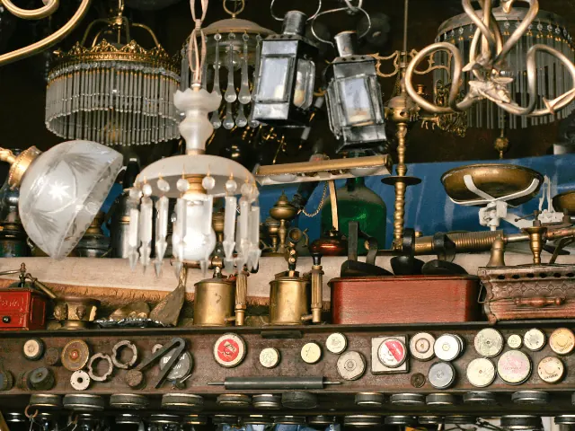
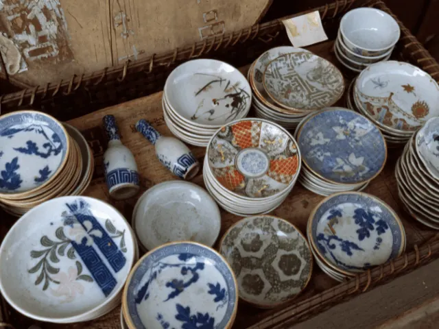

Kringloopwinkels in Nijmegen: tweedehands, vintage en antiek
Gepubliceerd op 3 december 2022, bijgewerkt op 25 november 2026
Onderdeel van de gids Winkelen in Nijmegen

Een kast voor een tientje, een vintage jas of gewoon een middag snuffelen: Nijmegen heeft grote kringloopwinkels aan de rand van de stad en kleine vintage- en tweedehandszaken in de binnenstad. Hier staan alle kringloopwinkels en tweedehandswinkels van Nijmegen op een rij, met waar je spullen kunt brengen, welke winkels op zondag open zijn en tips om echte parels te vinden.
De grote kringloopwinkels in Nijmegen
Het Goed: de grootste van de stad
Op het industrieterrein in Nijmegen-West, aan de Industrieweg 54, zit Het Goed. Het is de grootste kringloopwinkel van Nijmegen, met meubels, kleding, boeken, huisraad en elektronica. Je kunt er van maandag tot en met zaterdag je eigen spullen inleveren, en de winkel is ook op zondag open.
Kringloopwinkel Marcel: 1.300 vierkante meter
Bij Kringloopwinkel Marcel in Nijmegen-Zuid is het motto: wat voor de één overbodig is, kan voor een ander een schat zijn. Op zo'n 1.300 vierkante meter vind je boeken, kleding, complete eethoeken en elektrische apparaten. Je parkeert gratis, de koffie en thee zijn gratis, en je kunt er spullen brengen.
Kleren Goed, Riesruimt en Basta
- Kleren Goed aan de Prins Hendrikstraat 14: kringloop en meubels in Nijmegen-Oost.
- Riesruimt aan het Zwanenveld 6600: kringloop, vintage kleding en meubels in Dukenburg.
- Basta aan de Begijnenstraat 34: kringloopwinkel voor het goede doel midden in het centrum, met webshop. Spullen brengen kan.
Vintage en tweedehands kleding
Voor vintage hoef je in Nijmegen niet ver te zoeken. De meeste zaken zitten in de binnenstad, in de Van Welderenstraat en rond de Lange Hezelstraat.
Habbekrats: sinds 1983
Habbekrats aan de In de Betouwstraat is al sinds 1983 een begrip. Je vindt er een mix van vintage, design, industrieel en kunst: kleding, accessoires, meubels, curiosa en zelfs geluidsapparatuur. Oprichter Hans Holland gaf de winkel in 2019 door aan zijn dochter Ellen, die nog steeds in binnen- en buitenland op zoek gaat naar nieuwe vondsten.
Meer vintage en tweedehands kleding
- Just Vintage in Passage Molenpoort 6: vintage kleding voor het goede doel.
- Studio Zoef en 2ndMas in de Van Welderenstraat: twee tweedehands kledingzaken in dezelfde winkelstraat.
- Appel & Ei in de Augustijnenstraat 39: tweedehands dames- en herenkleding, schoenen en accessoires.
- ReShare Store aan de Lange Hezelstraat 84: de kledingwinkel van het Leger des Heils in de oudste winkelstraat van Nederland.
- Terre des Hommes Shop aan de Houtstraat 41: tweedehands kleding, boeken en spullen voor het goede doel.
- Secondhand Rose aan het Wintersoord 24: tweedehands kleding voor het goede doel. Je kunt er kleding brengen.
- Javco aan het Zwanenveld 9016: vintage kleding in Dukenburg, met webshop.
Antiek, brocante en meubels
- Strydhagen en Vivre Interieur Authentique aan de Stationsweg: twee antiekzaken naast elkaar in Nijmegen-Oost, waaronder een antiekhal van zo'n 11.000 vierkante meter.
- Woodstock Wonen: antieke en oude meubels.
- Bert and Co aan de Holtakkerweg en de Cargadoorweg: antiek en meubels, ook via de webshop.
Tips om parels te vinden

- Kom vaak terug. Het aanbod verandert bijna elke dag. Wie een paar winkels regelmatig bezoekt, ziet de nieuwe spullen het eerst.
- Weet waar je naar zoekt. Een kringloopwinkel kan chaotisch zijn. Maak een lijstje, en neem de maten van je kamer mee als je meubels zoekt.
- Neem de tijd. De mooiste vondsten liggen vaak achterin of onderop.
- Twijfel niet te lang. Wat vandaag in de winkel staat, is morgen misschien weg.
- Zie het als begin. Een likje verf, nieuwe knoppen of een andere bekleding maakt van een oud meubel iets dat precies bij jouw huis past.
Net verhuisd naar Nijmegen of op kamers? Met een middag langs de kringloopwinkels richt je voor weinig geld je kamer in. Ook voor een origineel cadeau is een kringloopwinkel een goede plek.
Spullen brengen en markten
Spullen brengen kan bij Het Goed, Kringloopwinkel Marcel, Basta, Habbekrats, Just Vintage, Secondhand Rose, Studio Zoef, Javco en de Terre des Hommes Shop. De meeste kringloopwinkels nemen kleding, meubels, boeken, speelgoed en werkende apparaten aan. Grote meubels halen ze vaak op afspraak op.
Liever op een markt zoeken? Op Koningsdag is de vrijmarkt in het Goffertpark, en door het jaar heen zijn er rommel- en vlooienmarkten, zie markten in Nijmegen. Andere winkels vind je in onze gids winkelen in Nijmegen.
Veelgestelde vragen
Wat is de grootste kringloopwinkel van Nijmegen?
Het Goed aan de Industrieweg 54 in Nijmegen-West, met meubels, kleding, boeken en huisraad. De winkel is ook op zondag open en je kunt er spullen brengen.
Welke kringloopwinkels in Nijmegen zijn op zondag open?
Het Goed, Kringloopwinkel Marcel en de Terre des Hommes Shop aan de Houtstraat. Kijk voor de precieze tijden op hun eigen site.
Waar kun je in Nijmegen tweedehands spullen brengen?
Bij Het Goed, Kringloopwinkel Marcel, Basta, Habbekrats, Just Vintage, Secondhand Rose, Studio Zoef, Javco en de Terre des Hommes Shop. Grote meubels worden vaak op afspraak opgehaald.
Waar vind je vintage kleding in Nijmegen?
In de binnenstad bij Habbekrats, Just Vintage, Studio Zoef, 2ndMas, Appel & Ei en de ReShare Store. Buiten het centrum bij Secondhand Rose en Javco.
Waar koop je antiek in Nijmegen?
Aan de Stationsweg bij Strydhagen en Vivre Interieur Authentique, met een antiekhal van zo'n 11.000 vierkante meter, en bij Woodstock Wonen en Bert and Co.
Kringloop- en vintagewinkels in Nijmegen
Zin om te beginnen? In onze bedrijvengids vind je alle 22 winkels in Nijmegen, met openingstijden, kenmerken en een kaart.
Bekijk alle 22 winkels in Nijmegen
Heb je zelf een winkel? Laat je hier uitlichten.